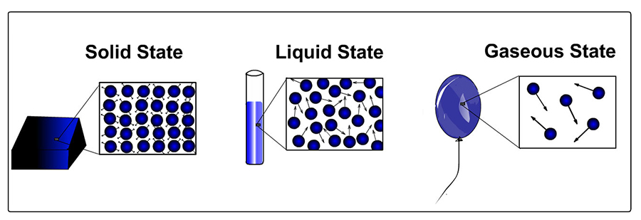
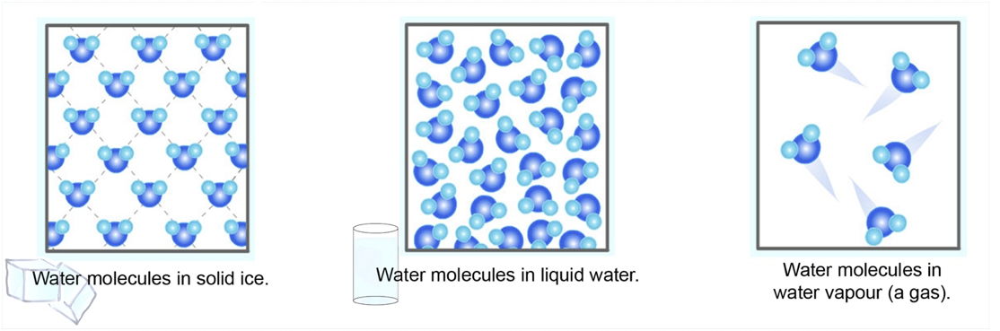

States of Matter
States of Matter. Depending on the amount of energy of movement of its molecules (or atoms), matter is usually in one of three states here on Earth. These states are solids (lowest energy/slowest speeds), liquids (middle energy/higher speed), and gases (higher energy/fastest speed). In the picture below, the speed of the molecules (or atoms) is represented by the length of the arrows. You can see that atoms in a gas state move atoms in a liquid state. And atoms in a liquid state move faster than atoms in a solid state.
In its solid state, the molecules (or atoms) that make up matter are in fixed positions. Particles in a solid move back and forth — or vibrate — within their fixed positions. In its liquid state, the molecules (or atoms) are not in fixed locations but kind of "slither around" each other, kind of like how marbles in a jar move around each other when you reach your hand into it.
In a gas state, molecules (or atoms) have even more energy and can escape the downward pull of gravity to move around more freely.
For most types of molecules (or atoms), as shown in the picture above, molecules (or atoms) are packed when they are in a solid state. They are least densely packed when they are in a
Notable exception: Water!
Water, or H2O, is an exception: at some temperatures, ice is less dense than liquid water. This idea is shown below:
